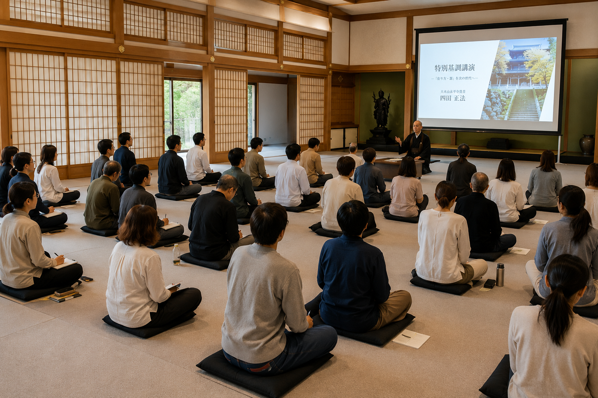
ZEN Conference
それぞれの歩みが、
集い重なる日。
一年に一度、ZEN Fieldに関わる人々がひとつの場所に集う日。 多様な人、知恵、実践、表現が交わり、思いがけない問いや出会いが生まれていく。
View Detail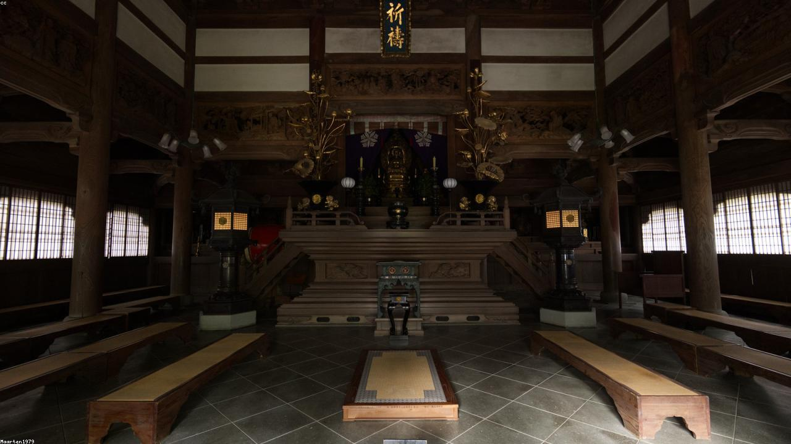
Living Zen from Fukui.
感覚をひらき、世界と出会い直す。
福井ではじまる、これからの豊かさの実践。
変わり続ける時代に流されず、「只今」を生きる。
福井で五感をひらき、自分と世界との関係を編み直していく。
専門も肩書きも問わず集う、これからの豊かさのための実践の場です。
豊かさは、頭で考える前に、
身体が感じている。
ここでいう「ZEN」は、宗教ではなく、生き方のOS。
福井の風土に共鳴する人とともに、これからの豊かさを育てていきます。
知識を学ぶのではなく、体験から生まれる気づきを大切に。
季節の巡りに耳を澄ませながら、感覚をひらいていく。
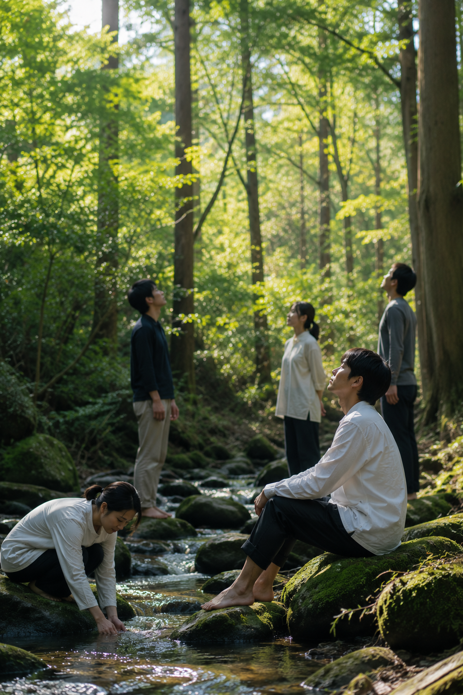
自然の中で五感をひらく
呼吸を通して、自分を整える
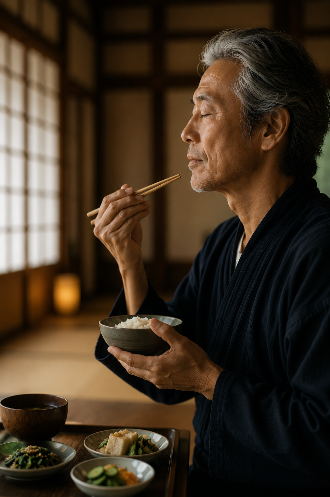
食を味わい、感性を磨く
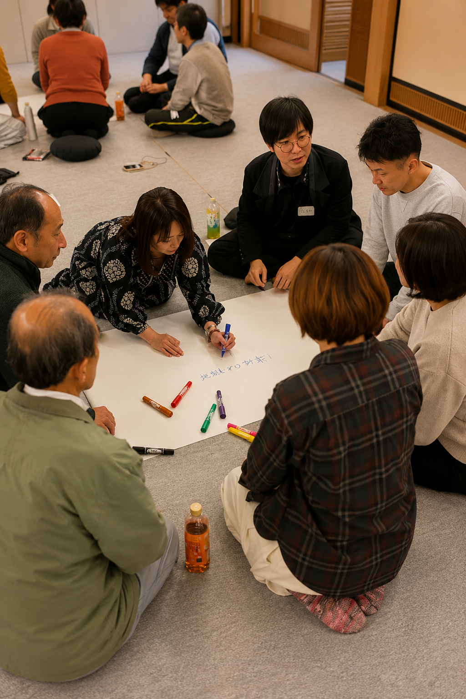
対話を通して、多様な価値観にふれる
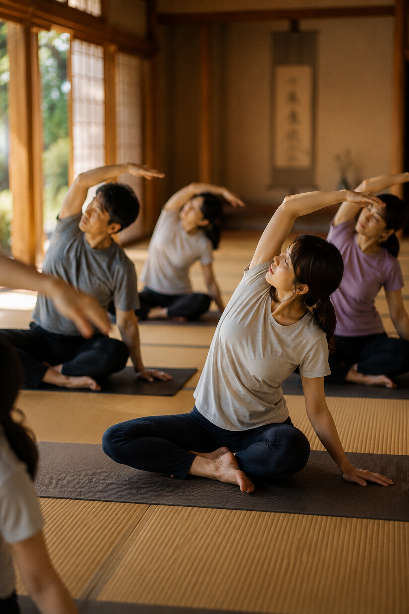
身体を動かし、表現する
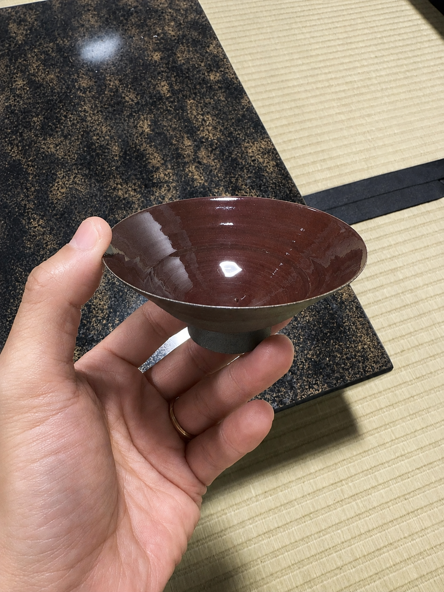
福井の文化や暮らしに学ぶ
対話し、体験し、持ち帰り、また集う。
三つの実践が響き合いながら、場全体を育てていく。

ZEN Conference
一年に一度、ZEN Fieldに関わる人々がひとつの場所に集う日。 多様な人、知恵、実践、表現が交わり、思いがけない問いや出会いが生まれていく。
View Detail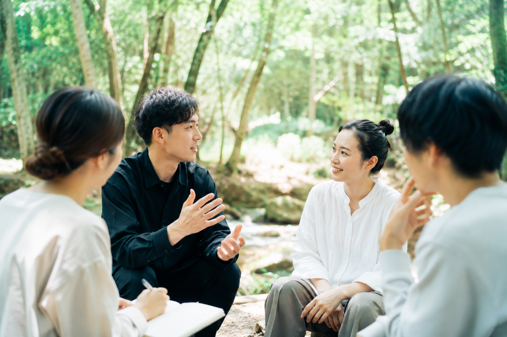
ZEN Dialogue
季節の巡りに耳を澄ませながら、ひとつの問いを囲んで語り合う。 答えを急がず、問いそのものを味わう。立ち止まり、感覚をひらき直す集いです。
View Detail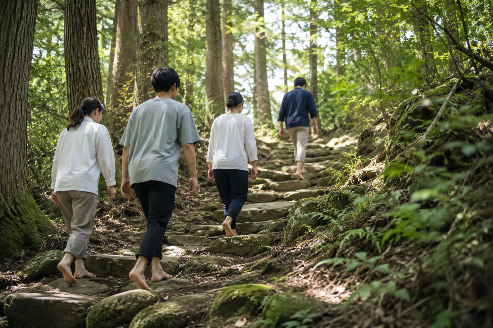
ZEN Alive
土地や自然のただなかへ、身体ごと入り込んでいく。 歩き、ふれ、感じながら、言葉や知識では届かない気づきを、体験そのものから受け取る。
View Detailそして、日常へ持ち帰る。
集いで得た学びや気づきを、暮らしのなかへ還していく。
やがてまた、次の対話・体験へ。三つの実践が円環し、
日々と地続きのまま、ゆっくりと育っていきます。
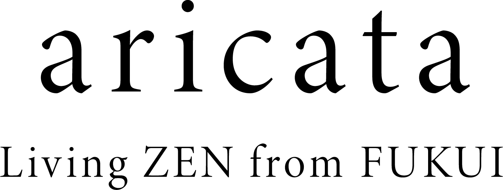
「在り方」を意味する、ZEN Field の母体
ZEN Field を育てているのは、aricata という器です。
人と自然、文化と未来をつなぎ、地域と世界をつなぐ。
新しい実践を生み出す母体として、福井から、これからの豊かさを育てています。
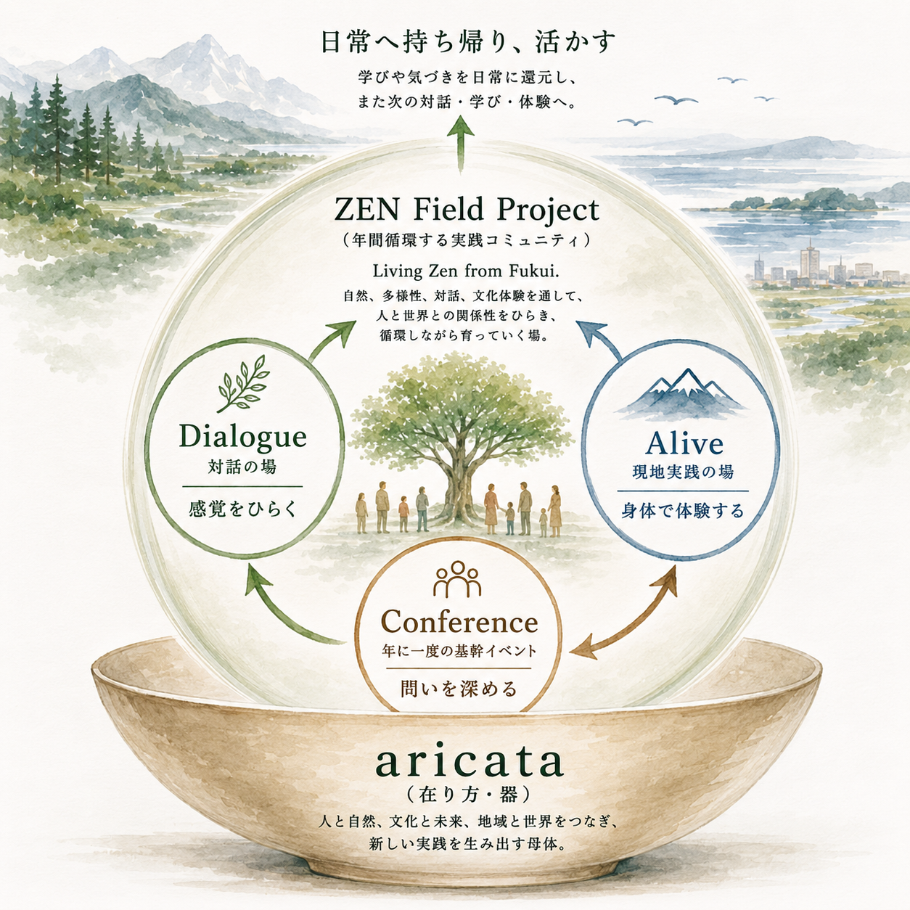
コアメンバー
立田 千菜美
対話の場づくり ／ ファシリテーション
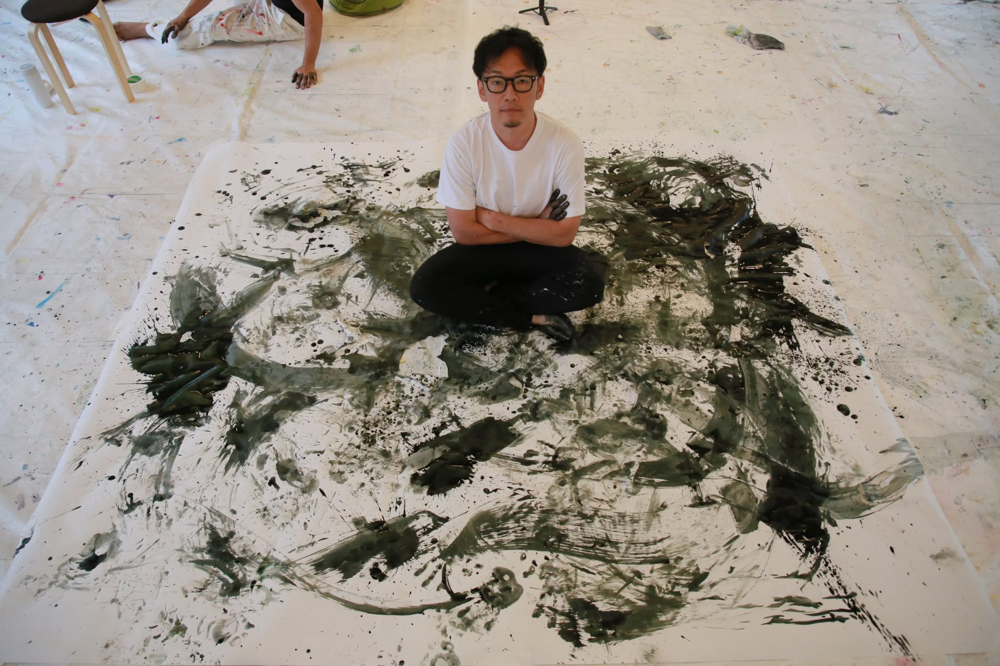
前田 聰一郎
プロジェクト統括 ／ プロデュース
佐々木 絵美
クリエイティブ ／ 記録
サポートメンバー
佐竹 正範
広報・PR
宮田 耕輔
映像・記録
飛田 章宏
地域・行政連携
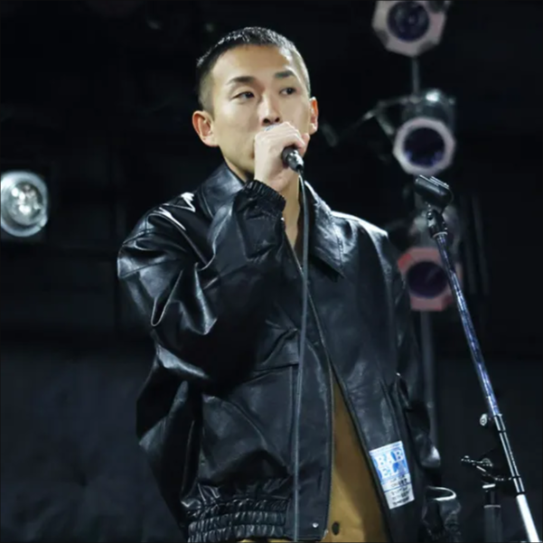
小針 翼
当日ファシリ
加藤 太一
企画サポート
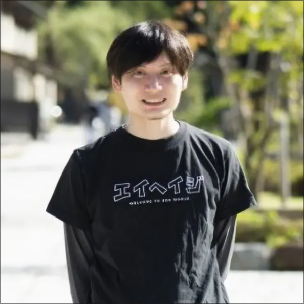
井上 才蔵
まちづくり連携
※ 肩書き・サポートメンバーの表示は一部調整中です。
ご質問・ご相談・取材のご依頼など、お気軽にお寄せください。